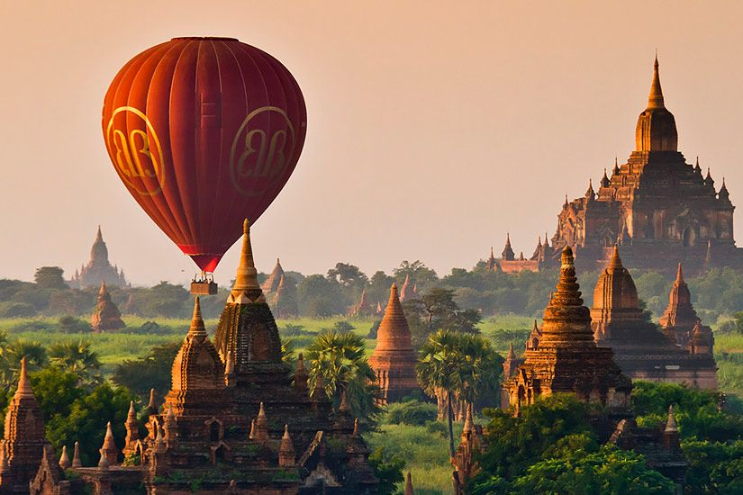
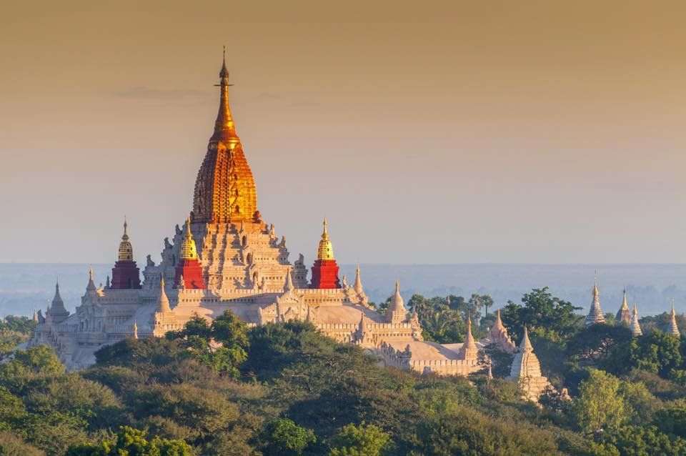
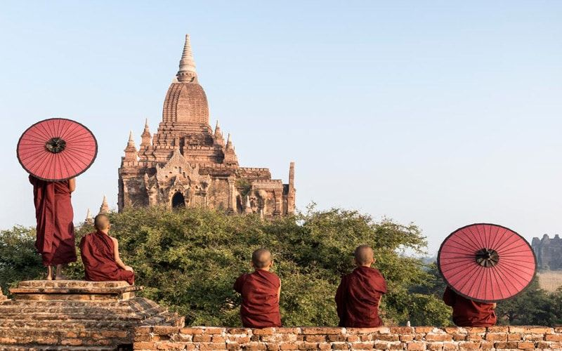

Central Myanmar
Bagan
Over 2,000 Buddhist temples scattered across a single plain, best seen from a hot air balloon at first light or a bicycle at dusk.
Why it's special: Nowhere else in Southeast Asia packs this density of centuries-old temples into a walkable, cyclable plain — it rewards slow, unplanned wandering as much as any guided stop.
Top Attractions
- Ananda Temple's gilded stupa
- Shwesandaw Pagoda sunset terrace
- Dhammayangyi, Bagan's largest temple
- Old Bagan archaeological zone
Recommended Activities
Sunrise balloon ride
E-bike temple hopping
River sunset cruise
Lacquerware workshop
Famous Local Foods
Mohinga (fish noodle soup)
Tea leaf salad
Shan noodles
Palm jaggery sweets
Culture & Traditions
Bagan remains an active pilgrimage site — locals still leave offerings at working monasteries between the ruins. Modest dress and bare feet are expected at every temple, and quiet respect goes further than any camera angle.
Best Time to VisitNovember – February
Estimated Budget$50–$220 / day, by tier
Tour Duration2–3 days